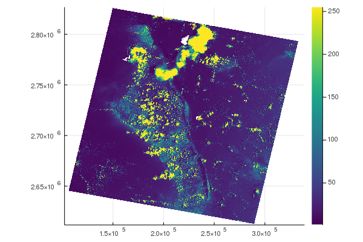

GeoArrays
Simple geographical raster interaction built on top of ArchGDAL, GDAL and CoordinateTransformations.
A GeoArray is an AbstractArray, an AffineMap for calculating coordinates based on the axes and a CRS definition to interpret these coordinates into in the real world. It's three dimensional and can be seen as a stack (3D) of 2D geospatial rasters (bands), the dimensions are :x, :y, and :bands. The AffineMap and CRS (coordinates) only operate on the :x and :y dimensions.
This packages takes its inspiration from Python's rasterio.
Installation
(v1.8) pkg> add GeoArraysExamples
Basic Usage
Load the GeoArrays package.
julia> using GeoArraysRead a GeoTIFF file and display its information, i.e. AffineMap and projection (CRS).
# Read TIF file
julia> fn = download("https://github.com/yeesian/ArchGDALDatasets/blob/master/data/utmsmall.tif?raw=true")
julia> geoarray = GeoArrays.read(fn)
100x100x1 Array{UInt8,3} with AffineMap([60.0 0.0; 0.0 -60.0], [440720.0, 3.75132e6]) and CRS PROJCS["NAD27 / UTM zone 11N"...
# Affinemap containing offset and scaling
julia> geoarray.f
AffineMap([60.0 0.0; 0.0 -60.0], [440720.0, 3.75132e6])
# WKT projection string
julia> geoarray.crs
GeoFormatTypes.WellKnownText{GeoFormatTypes.CRS}(GeoFormatTypes.CRS(), "PROJCS[\"NAD27 / UTM zone 11N\",GEOGCS[\"NAD27\",DATUM[\"North_American_Datum_1927\",SPHEROID[\"Clarke 1866\",6378206.4,294.978698213898,AUTHORITY[\"EPSG\",\"7008\"]],AUTHORITY[\"EPSG\",\"6267\"]],PRIMEM[\"Greenwich\",0],UNIT[\"degree\",0.0174532925199433,AUTHORITY[\"EPSG\",\"9122\"]],AUTHORITY[\"EPSG\",\"4267\"]],PROJECTION[\"Transverse_Mercator\"],PARAMETER[\"latitude_of_origin\",0],PARAMETER[\"central_meridian\",-117],PARAMETER[\"scale_factor\",0.9996],PARAMETER[\"false_easting\",500000],PARAMETER[\"false_northing\",0],UNIT[\"metre\",1,AUTHORITY[\"EPSG\",\"9001\"]],AXIS[\"Easting\",EAST],AXIS[\"Northing\",NORTH],AUTHORITY[\"EPSG\",\"26711\"]]")Writing to GeoTIFF
Create a random GeoArray and write it to a GeoTIFF file.
# Create, reference and write a TIFF
julia> ga = GeoArray(rand(100,200))
julia> bbox!(ga, (min_x=2., min_y=51., max_x=5., max_y=54.)) # roughly the Netherlands
julia> epsg!(ga, 4326) # in WGS84
julia> GeoArrays.write("test.tif", ga)
# Or write it with compression and tiling
julia> GeoArrays.write("test_compressed.tif", ga; options=Dict("TILED"=>"YES", "COMPRESS"=>"ZSTD"))Streaming support
The package supports streaming reading.
# Read in 39774x60559x1 raster (AHN3), but without masking (missing) support
julia> @time ga = GeoArrays.read(fn, masked=false)
0.001917 seconds (46 allocations: 2.938 KiB)
39774x60559x1 ArchGDAL.RasterDataset{Float32,ArchGDAL.IDataset} with AffineMap([1.0433425614165472e-6 0.0; 0.0 -1.0433425614165472e-6], [0.8932098305563291, 0.11903776654646055]) and CRS PROJCS["Amersfoort / RD New",GEOGCS["Amersfoort",DATUM["Amersfoort",SPHEROID["Bessel 1841",6377397.155,299.1528128,AUTHORITY["EPSG","7004"]],AUTHORITY["EPSG","6289"]],PRIMEM["Greenwich",0,AUTHORITY["EPSG","8901"]],UNIT["degree",0.0174532925199433,AUTHORITY["EPSG","9122"]],AUTHORITY["EPSG","4289"]],PROJECTION["Oblique_Stereographic"],PARAMETER["latitude_of_origin",52.1561605555556],PARAMETER["central_meridian",5.38763888888889],PARAMETER["scale_factor",0.9999079],PARAMETER["false_easting",155000],PARAMETER["false_northing",463000],UNIT["metre",1,AUTHORITY["EPSG","9001"]],AXIS["Easting",EAST],AXIS["Northing",NORTH],AUTHORITY["EPSG","28992"]]Reading bands
GeoTIFFs can be large, with several bands, one can read.
When working with large rasters, e.g. with satellite images that can be GB in size, it is useful to be able to read only one band (or a selection of them) to GeoArray. When using read, one can specify the band.
# Get file
julia> fn = download("https://github.com/yeesian/ArchGDALDatasets/blob/master/pyrasterio/RGB.byte.tif?raw=true")
# Read band 2
julia> ga_band = GeoArrays.read(fn, masked=false, band=2)
791x718x1 Array{UInt8, 3} with AffineMap([300.0379266750948 0.0; 0.0 -300.041782729805], [101985.0, 2.826915e6]) and CRS PROJCS["UTM Zone 18, Northern Hemisphere",GEOGCS["Unknown datum based upon the WGS 84 ellipsoid",DATUM["Not_specified_based_on_WGS_84_spheroid",SPHEROID["WGS 84",6378137,298.257223563,AUTHORITY["EPSG","7030"]]],PRIMEM["Greenwich",0],UNIT["degree",0.0174532925199433,AUTHORITY["EPSG","9122"]]],PROJECTION["Transverse_Mercator"],PARAMETER["latitude_of_origin",0],PARAMETER["central_meridian",-75],PARAMETER["scale_factor",0.9996],PARAMETER["false_easting",500000],PARAMETER["false_northing",0],UNIT["metre",1,AUTHORITY["EPSG","9001"]],AXIS["Easting",EAST],AXIS["Northing",NORTH]]In case there is missing data, the type will be a Union{Missing, T}. To convert to a GeoArray without missing, you can call coalesce(ga, value_to_replace_missing).
Using coordinates
GeoArrays have geographical coordinates for all array elements (pixels). They can be retrieved with the GeoArrays.coords function.
# Find coordinates by index
julia> GeoArrays.coords(geoarray, (1,1))
2-element StaticArrays.SArray{Tuple{2},Float64,1,2}:
440720.0
3.75132e6All coordinates (tuples) are obtained as generator when omitting the index parameter.
# Find all coordinates
julia> collect(GeoArrays.coords(geoarray))
101×101 Matrix{StaticArraysCore.SVector{2, Float64}}:
[440720.0, 3.75132e6] [440720.0, 3.75126e6] [440720.0, 3.7512e6] ...
...Similarly, one can find the coordinates ranges of a GeoArray
julia> x, y = GeoArrays.ranges(geoarray)
(440750.0:60.0:446690.0, 3.75129e6:-60.0:3.74535e6)The operation can be reversed, i.e. row and column index can be computed from coordinates with the indices function.
# Find index by coordinates
julia> indices(geoarray, [440720.0, 3.75132e6])
CartesianIndex(1, 1)Manipulation
Basic GeoArray manipulation is implemented, e.g. translation.
# Translate complete raster by x + 100
julia> trans = Translation(100, 0)
julia> compose!(ga, trans)When GeoArrays have the same dimensions, AffineMap and CRS, addition, subtraction, multiplication and division can be used.
# Math with GeoArrays (- + * /)
julia> GeoArray(rand(5,5,1)) - GeoArray(rand(5,5,1))
5x5x1 Array{Float64,3} with AffineMap([1.0 0.0; 0.0 1.0], [0.0, 0.0]) and undefined CRSOne can also warp an array, using GDAL behind the scenes. For example, we can vertically transform from the ellipsoid to the EGM2008 geoid using EPSG code 3855. Note that the underlying PROJ library needs to find the geoidgrids, so if they're not available locally, one needs to set ENV["PROJ_NETWORK"] = "ON" as early as possible, ideally before loading GeoArrays.
ga = GeoArray(zeros((360, 180)))
bbox!(ga, (min_x=-180, min_y=-90, max_x=180, max_y=90))
crs!(ga, GeoFormatTypes.EPSG(4979)) # WGS83 in 3D (reference to ellipsoid)
ga2 = GeoArrays.warp(ga, Dict("t_srs" => "EPSG:4326+3855"))Nodata filling
GeoArrays with missing data can be filled with the fill! function.
julia> using GeoStatsSolvers # or any estimation solver from the GeoStats ecosystem
julia> ga = GeoArray(Array{Union{Missing, Float64}}(rand(5, 1)))
julia> ga.A[2,1] = missing
[:, :, 1] =
0.6760718768442127
missing
0.852882193026649
0.7137410453351622
0.5949409082233854
julia> GeoArrays.fill!(ga, IDW(:band => (neighbors=3,))) # band is the hardcoded variable
[:, :, 1] =
0.6760718768442127
0.7543298370153771
0.852882193026649
0.7137410453351622
0.5949409082233854Plotting
Individual bands from a GeoArray can be plotted with the plot function. By default the first band is used.
# Plot a GeoArray
julia> using Plots
julia> fn = download("https://github.com/yeesian/ArchGDALDatasets/blob/master/pyrasterio/RGB.byte.tif?raw=true")
julia> ga = GeoArrays.read(fn)
julia> plot(ga)
# or plot a band other than the first one
julia> plot(ga, band=2)
Note that for larger GeoArrays, only a sample of the data is plotted for performance. By default the sample size is twice figure size. You can control this factor by calling plot(ga, scalefactor=2), where higher scalefactor yields higher sizes, up to the original GeoArray size.
Subsetting arrays
GeoArrays can be subset by row, column and band using the array subsetting notation, e.g. ga[100:200, 200:300, 1:2].
# Get file
julia> fn = download("https://github.com/yeesian/ArchGDALDatasets/blob/master/pyrasterio/RGB.byte.tif?raw=true")
# Read the entire file
julia> ga = GeoArrays.read(fn);
julia> ga.f
AffineMap([300.0379266750948 0.0; 0.0 -300.041782729805], [101985.0, 2.826915e6])
julia> ga_sub = ga[200:500,200:400,begin:end]
301x201x3 Array{Union{Missing, UInt8}, 3} with AffineMap([300.0379266750948 0.0; 0.0 -300.041782729805], [161692.54740834387, 2.767206685236769e6]) and CRS PROJCS["UTM Zone 18, Northern Hemisphere",GEOGCS["Unknown datum based upon the WGS 84 ellipsoid",DATUM["Not_specified_based_on_WGS_84_spheroid",SPHEROID["WGS 84",6378137,298.257223563,AUTHORITY["EPSG","7030"]]],PRIMEM["Greenwich",0],UNIT["degree",0.0174532925199433,AUTHORITY["EPSG","9122"]]],PROJECTION["Transverse_Mercator"],PARAMETER["latitude_of_origin",0],PARAMETER["central_meridian",-75],PARAMETER["scale_factor",0.9996],PARAMETER["false_easting",500000],PARAMETER["false_northing",0],UNIT["metre",1,AUTHORITY["EPSG","9001"]],AXIS["Easting",EAST],AXIS["Northing",NORTH]]
julia> ga_sub.f
AffineMap([300.0379266750948 0.0; 0.0 -300.041782729805], [161692.54740834387, 2.767206685236769e6])
julia> plot(ga_sub)
Profile
You can sample the values along a line in a GeoArray with profile(ga, linestring). The linestring can be any geometry that supports GeoInterface.jl.
Alternatives
GeoArrays.jl was written to quickly save a geospatial Array to disk. Its functionality mimics rasterio in Python. If one requires more features–-such as rasterization or zonal stats–-which also work on NetCDF files, Rasters.jl is a good alternative. Its functionality is more like (rio)xarray in Python.
API
GeoArrays.Center — TypeCenter()Strategy to use in functions like indices and coords, in which it will use the center of the raster cells to do coordinate conversion.
GeoArrays.GeoArray — TypeGeoArray{T::NumberOrMissing,A<:AbstractArray{T,3}} <: AbstractArray{T,3}A GeoArray is an AbstractArray, an AffineMap for calculating coordinates based on the axes and a CRS definition to interpret these coordinates into in the real world. It's three dimensional and can be seen as a stack (3D) of 2D geospatial rasters (bands), the dimensions are :x, :y, and :bands. The AffineMap and CRS (coordinates) only operate on the :x and :y dimensions.
GeoArrays.GeoArray — MethodGeoArray(A::AbstractArray{T,3} where T <: NumberOrMissing, x::AbstractRange, y::AbstractRange, args...)Construct a GeoArray any Array and it's coordinates from AbstractRanges for each dimension.
GeoArrays.GeoArray — MethodGeoArray(A::AbstractArray{T,3} where T <: NumberOrMissing, f::AffineMap, crs::String)Construct a GeoArray from any Array and an AffineMap that specifies the coordinates and crs string in WKT format.
GeoArrays.GeoArray — MethodGeoArray(A::AbstractArray{T,3} where T <: NumberOrMissing, f::AffineMap)Construct a GeoArray from any Array and an AffineMap that specifies the coordinates. A default CRS will be generated.
GeoArrays.GeoArray — MethodGeoArray(A::AbstractArray{T,3} where T <: NumberOrMissing)Construct a GeoArray from any Array. A default AffineMap and CRS will be generated.
Examples
julia> GeoArray(rand(10,10,1))
10x10x1 Array{Float64, 3} with AffineMap([1.0 0.0; 0.0 1.0], [0.0, 0.0]) and undefined CRSGeoArrays.GeoArray — MethodGeoArray(A::AbstractArray{T,2} where T <: NumberOrMissing)Construct a GeoArray from any Matrix, a third singleton dimension will be added automatically.
Examples
julia> GeoArray(rand(10,10))
10x10x1 Array{Float64, 3} with AffineMap([1.0 0.0; 0.0 1.0], [0.0, 0.0]) and undefined CRSGeoArrays.Vertex — TypeVertex()Strategy to use in functions like indices and coords, in which it will use the top left vertex of the raster cells to do coordinate conversion.
Base.coalesce — Methodcoalesce(ga::GeoArray, v)Replace all missing values in ga with v and set the GeoArray's eltype to the non-missing type.
Examples
julia> ga = GeoArray(collect([1 missing; 2 3]))
2x2x1 Base.ReshapedArray{Union{Missing, Int64}, 3, Matrix{Union{Missing, Int64}}, Tuple{}} with AffineMap([1.0 0.0; 0.0 1.0], [0.0, 0.0]) and undefined CRS
julia> ga2 = coalesce(ga, 0)
2x2x1 Array{Int64, 3} with AffineMap([1.0 0.0; 0.0 1.0], [0.0, 0.0]) and undefined CRS
julia> ga.A
2×2×1 Array{Int64, 3}:
[:, :, 1] =
1 0
2 3Base.getindex — Methodgetindex(ga::GeoArray, i::AbstractRange, j::AbstractRange, k::Union{Colon,AbstractRange,Integer})Index a GeoArray with AbstractRanges to get a cropped GeoArray with the correct AffineMap set.
Examples
julia> ga[2:3,2:3,1]
2x2x1 Array{Float64, 3} with AffineMap([1.0 0.0; 0.0 1.0], [1.0, 1.0]) and undefined CRSBase.getindex — Methodgetindex(ga::GeoArray, I::SVector{2,<:AbstractFloat})Index a GeoArray with AbstractFloats to automatically get the value at that coordinate, using the function indices. A BoundsError is raised if the coordinate falls outside the bounds of the raster.
Examples
julia> ga[3.0,3.0]
1-element Vector{Float64}:
0.5630767850028582Base.isequal — MethodCheck whether two GeoArrayss a and b are geographically equal, although not necessarily in content.
GeoArrays.bbox! — MethodSet geotransform of GeoArray by specifying a bounding box. Note that this only can result in a non-rotated or skewed GeoArray.
GeoArrays.bbox_overlap — MethodCheck bbox overlapping
Return true if two bboxes overlap.
GeoArrays.bboxes — MethodGenerate bounding boxes for GeoArray cells.
GeoArrays.compose! — MethodTransform an GeoArray by applying a Transformation.
GeoArrays.coords! — Methodcoords!(ga, x::AbstractUnitRange, y::AbstractUnitRange)Set AffineMap of GeoArray by specifying the center coordinates for each x, y dimension by a UnitRange.
GeoArrays.coords — Methodcoords(ga::GeoArray, p::SVector{2,<:Integer}, strategy::AbstractStrategy=Center())
coords(ga::GeoArray, p::Tuple{<:Integer,<:Integer}, strategy::AbstractStrategy=Center())
coords(ga::GeoArray, p::CartesianIndex{2}, strategy::AbstractStrategy=Center())Retrieve coordinates of the cell index by p. See indices for the inverse function.
GeoArrays.crop — Methodfunction crop(ga::GeoArray, cbox::NamedTuple{(:min_x, :min_y, :max_x, :max_y),Tuple{Float64,Float64,Float64,Float64}})Crop input GeoArray by coordinates (box or another GeoArray). If the coordinates range is larger than the GeoArray, only the overlapping part is given in the result.
GeoArrays.epsg! — MethodSet CRS on GeoArray by epsgcode
GeoArrays.epsg2wkt — MethodGet the WKT of an Integer EPSG code
GeoArrays.fill! — Methodfill!(ga::GeoArray, solver::EstimationSolver, band=1)Replace missing values in GeoArray ga using solver from the GeoStats ecosystem.
GeoArrays.flipud! — MethodFunction to flip GeoArray upside down to adjust to GDAL ecosystem.
GeoArrays.gdaltype — MethodConverts type of Array for one that exists in GDAL.
GeoArrays.get_nodata — MethodRetrieves nodata value from RasterBand.
GeoArrays.indices — Methodindices(ga::GeoArray, p::SVector{2,<:Real}, strategy::AbstractStrategy)Retrieve logical indices of the cell represented by coordinates p. strategy can be used to define whether the coordinates represent the center (Center) or the top left corner (Vertex) of the cell. See coords for the inverse function.
GeoArrays.is_rotated — MethodCheck wether the AffineMap of a GeoArray contains rotations.
GeoArrays.mask_flags — MethodTakes bitwise OR-ed set of status flags and returns flags.
GeoArrays.profile — Methodprofile(ga::GeoArray, geom; band=1)Draw a profile along a geometry and return the values in band as a vector. Geometry should be a GeoInterface compatible LineString.
GeoArrays.proj2wkt — MethodGet the WKT of an Proj string
GeoArrays.read — Methodread(fn::AbstractString; masked::Bool=true, band=nothing)Read a GeoArray from fn by using GDAL. The nodata values are automatically set to Missing, unless masked is set to false. In that case, reading is lazy, but nodata values have to be converted manually later on. The band argument can be used to only read that band, and is passed to the getindex as the third dimension selector and can be any valid indexer.
It's possible to read from virtual filesystems, such as S3, or to provide specific driver pre and postfixes to read NetCDF, HDF4 and HDF5.
read("/vsicurl/https://github.com/OSGeo/gdal/blob/master/autotest/alg/data/2by2.tif?raw=true")
read("HDF5:"/path/to/file.hdf5":subdataset")GeoArrays.sample! — Methodsample!(ga::GeoArray, ga2::GeoArray)Sample values from ga2 to ga.
GeoArrays.str2wkt — MethodParse CRS string into WKT.
GeoArrays.straighten — Methodstraighten(ga::GeoArray)Straighten a rotated GeoArray, i.e. let its AffineMap only scale the coordinates.
GeoArrays.warp — Functionwarp(ga::GeoArray, options::Dict{String,Any}; dest="/vsimem/##293")
warp(ga::GeoArray, like::GeoArray, options::Dict{String,Any}; dest="/vsimem/##294")warp uses ArchGDAL.gdalwarp to warp an GeoArray. The options are passed to GDAL's gdalwarp command. See the gdalwarp docs for a complete list of options. Another GeoArray like can be passed as the second argument to warp to use the like's crs, extent and size as the ga crs and resolution. The keyword dest is used to control where the temporary raster is stored. By default it is stored in memory, but can be set to a file path to directly save the warped GeoArray to disk.
Examples
julia> ga = GeoArray(rand(100,100))
julia> epsg!(ga, 4326)
julia> ga2 = GeoArrays.warp(ga, Dict("t_srs" => "EPSG:4326+3855"))GeoArrays.write — Methodwrite(fn::AbstractString, ga::GeoArray; nodata::Union{Nothing,Number}=nothing, shortname::AbstractString=find_shortname(fn), options::Dict{String,String}=Dict{String,String}(), bandnames=nothing)Write a GeoArray to fn. nodata is used to set the nodata value. Any Missing values in the GeoArray are converted to this value, otherwise the typemax of the element type of the array is used. The shortname determines the GDAL driver, like "GTiff", when unset the filename extension is used to derive this driver. The options argument may be used to pass driver options, such as setting the compression by Dict("compression"=>"deflate"). The bandnames keyword argument can be set to a vector or tuple of strings to set the band descriptions. It should have the same length as the number of bands.
Index
GeoArrays.CenterGeoArrays.GeoArrayGeoArrays.GeoArrayGeoArrays.GeoArrayGeoArrays.GeoArrayGeoArrays.GeoArrayGeoArrays.GeoArrayGeoArrays.VertexBase.coalesceBase.getindexBase.getindexBase.isequalGeoArrays.bbox!GeoArrays.bbox_overlapGeoArrays.bboxesGeoArrays.compose!GeoArrays.coordsGeoArrays.coords!GeoArrays.cropGeoArrays.epsg!GeoArrays.epsg2wktGeoArrays.fill!GeoArrays.flipud!GeoArrays.gdaltypeGeoArrays.get_nodataGeoArrays.indicesGeoArrays.is_rotatedGeoArrays.mask_flagsGeoArrays.profileGeoArrays.proj2wktGeoArrays.readGeoArrays.sample!GeoArrays.str2wktGeoArrays.straightenGeoArrays.warpGeoArrays.write